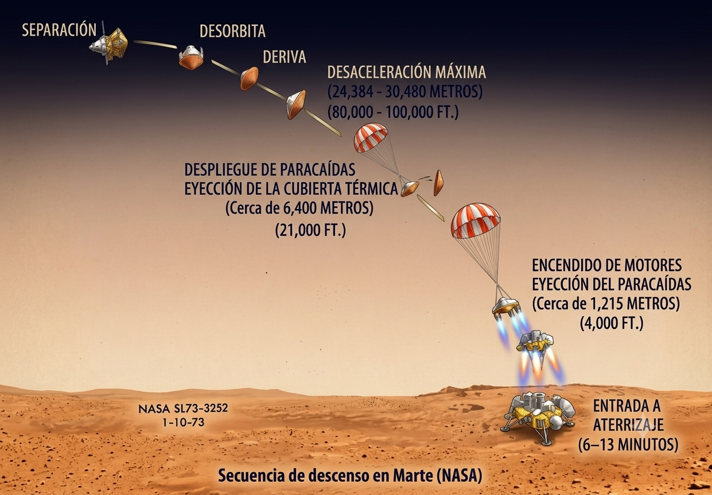
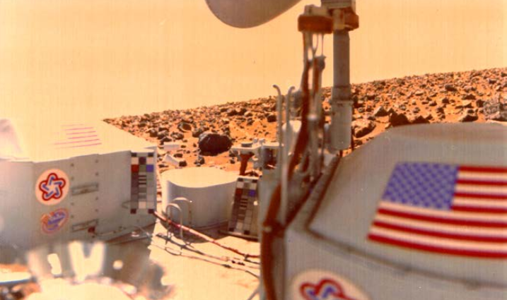

Una breve introducción
Las misiones Viking (1, 2), lanzadas en 1975, fueron el primer intento de la NASA de estudiar Marte de manera sistemática combinando un orbitador con un laboratorio científico en superficie. Cada misión estaba formada por dos vehículos: un orbitador encargado de cartografiar el planeta y seleccionar zonas de interés, y un módulo de descenso diseñado para atravesar la atmósfera marciana, amartizar de forma autónoma y analizar directamente el entorno. Estos transportaron los célebres experimentos biológicos diseñados para buscar indicios de metabolismo microbiano, cuyos resultados siguen siendo objeto de discusión.
Viking 1 llegó a la superficie de Chryse Planitia el 20 de julio de 1976, mientras que Viking 2 amartizaba el 3 de septiembre a la 22:37:50 UTC sobre Utopia Planitia, una enorme llanura situada en las latitudes medias-altas del hemisferio norte de Marte. Esta aterrizó cerca de 48° N, al oeste del cráter Mie. Se escogió este lugar por dos motivos principales (1) la seguridad, las imágenes orbitales sugerían un terreno relativamente suave y uniforme. De hecho, el sitio inicialmente previsto fue descartado porque parecía demasiado accidentado. (2) El interés científico, esa latitud norte estaba cerca de regiones donde se esperaba encontrar agua o hielo y, por tanto, se consideraba especialmente interesante para buscar posibles indicios de vida en el suelo marciano
El desafío del amartizaje
Aterrizar en Marte es un problema especialmente delicado porque su atmósfera se encuentra en un régimen poco favorable para una nave. Es mucho menos densa que la terrestre, pero no lo bastante tenue como para ignorarla. Durante la entrada, una nave llega a varios kilómetros por segundo y comprime violentamente el dióxido de carbono que encuentra delante de ella, generando una onda de choque y un intenso calentamiento aerodinámico.
El problema aparece cuando la nave ya ha perdido buena parte de su velocidad. La densidad atmosférica marciana cerca de la superficie es apenas del orden del uno por ciento de la terrestre, de modo que un paracaídas puede reducir considerablemente la velocidad, pero no suele ser suficiente para conseguir un aterrizaje suave de vehículos pesados. Marte presenta así una situación incómoda; tiene suficiente atmósfera para exigir un escudo térmico, pero demasiado poca para permitir que un paracaídas complete por sí solo el descenso.
Viking respondió a esa contradicción con una cadena de mecanismos, cada uno eficaz en un intervalo distinto de velocidad y altura: resistencia aerodinámica con escudo térmico, paracaídas supersónico, retrocohete regulables y patas amortiguadas. Todos este mecanismo fue automático pues debido a la distancia a la que se encontraba martes el retraso en las señales no permitían maniobrar a control de misión.

Figura 1. Esquema de la secuencia de entrada, descenso y aterrizaje de Viking, mostrando aeroshell, despliegue del paracaídas, separación del escudo y descenso propulsado.
Frenado aerodinámico
En principio menos atmósfera parece una buena noticia, hasta recordar que Viking 2 entró con una velocidad relativa de unos \(4.48\,\mathrm{km\,s^{-1}}\). La presión dinámica que se usa para medir y calcular la fuerza del impacto del aire sobre la estructura de un cohete a medida que este se mueve se calcula como
donde \(\rho\) es la densidad que determina cuánto gas encuentra la nave a su paso y \(v\) su la velocidad de la nave, por lo que inlcuso una atmósfera tenue puede ejercer una fuerzas considerables a velocidad supersónica. Luego la resistencia aerodinámica puede escribirse, en primera aproximación, como
El área frontal \(A\) de la nave y el coeficiente de resistencia \(C_D\) convierten el aire marciano en un freno, Viking utilizaba un aeroshell de unos \(3.5\,\mathrm{m}\) de diámetro con un frontal romo, aproximadamente un cono de 70 grados con la punta redondeada. Una geometría así genera una onda de choque separada de la superficie y mantiene buena parte del gas extremadamente caliente a cierta distancia del vehículo. Imagen 1
Por que un escudo térmico
De manera general la idea de un buen aterrizaje es saber disipar la energías cinética sin destruir la nave (con esto consejo ya casi eres 30 % un rocket scientist),la cuestión es que esta energía es inmensa, un simple cálculo de servilleta muestra la escala.
La guía de vehículos de entrada planetaria de NASA estima para Viking 2 una masa de unos \(982\,\mathrm{kg}\) al entrar en la atmósfera y una velocidad relativa de \(4.48\,\mathrm{km\,s^{-1}}\). Su energía cinética era por tanto aproximadamente
Eso equivale a unas 2,4 toneladas de TNT. El escudo no absorbió completamente diez gigajulios, gran parte de esa energía calentó y aceleró la atmósfera y terminó en la onda de choque y la estela, precisamente para eso sirve un aeroshell. Es decir una parte importante de esa energía cinética se disipa por calor alrededor de la nave.
El calentamiento convectivo cerca del punto de estancamiento, que es esencialmente, el punto de la superficie frontal de la nave donde el flujo atmosférico que viene hacia ella termina teniendo velocidad tangencial nula respecto a la superficie, puede estimarse mediante relaciones del tipo Sutton—Graves
El radio de curvatura de la parte frontal del escudo térmico \(R_n\) aparece en el denominador y la velocidad aproximadamente al cubo, por eso unos pocos kilómetros por segundo son un asunto térmico serio incluso con poca atmósfera.
Para Viking 2, NASA reconstruye un máximo de calentamiento convectivo cercano a \(21.95\,\mathrm{W\,cm^{-2}}\), es decir, unos \(220\,\mathrm{kW\,m^{-2}}\). Es más de cien veces el flujo de radiación solar que recibe una superficie orientada al Sol cerca de la Tierra. El máximo ocurrió cuando la nave todavía viajaba alrededor de \(4.1\,\mathrm{km\,s^{-1}}.\)
El escudo frontal estaba recubierto con SLA-561V, un ablador ligero basado en silicona, microesferas, corcho y fibras dentro de una estructura de panal. Protegía degradándose y expulsando material antes de que el calor alcanzara la estructura interna. En ingeniería térmica, perder dignamente una capa puede ser mejor que conservar heroicamente toda la nave durante tres segundos.

Figura 2. Vista detonada y corte transversal de la cápsula del aterrizador Viking. El diagrama detalla la integración del sistema EDL (Entrada, Descenso y Aterrizaje), mostrando la posición de almacenamiento del aterrizador (Lander), la cubierta de base, la aerocubierta de protección térmica y el punto de separación de la cápsula.
Paracaídas supersonico
Tras perder gran parte de su velocidad, Viking 2 pudo desplegar su paracaídas disk-gap-band, una geometría ensayada extensamente por la NASA para funcionamiento supersónico y heredada por misiones marcianas posteriores.
El paracaídas tenía unos \(16.2\,\mathrm{m}\) de diámetro. Los datos reconstruidos para Viking 2 sitúan su despliegue alrededor de Mach 1,1 y con una presión dinámica de aproximadamente \(408\,\mathrm{Pa}\). Abrir demasiado pronto habría impuesto cargas enormes; demasiado tarde habría dejado poca altura para completar el frenado.
El paracaídas funcionaba, pero no podía llevar una nave del tamaño de Viking hasta una velocidad segura. Tras cerca de un minuto desplegado, el vehículo todavía descendía a decenas de metros por segundo. Debido a eso en Marte, un paracaídas era una etapa intermedia, no el final.
Retrocohetes
Aproximadamente un kilómetro y medio de altura comenzaba la fase decisiva. Viking soltaba el paracaídas y encendía tres motores de descenso alimentados con hidrazina. Un radar altímetro y un radar Doppler proporcionaban altura y velocidad, mientras el sistema de control ajustaba el empuje.
La dinámica del descenso podía describirse mediante \(\dot mv + m\dot v=T-mg-D\), con una masa que disminuía al consumir hidrazina, pero Viking no resolvía esta ecuación en tiempo real para decidir cuánto empuje aplicar. Su ordenador seguía una estrategia más robusta, llevaba almacenadas unas curvas precalculadas que indicaban qué velocidad debía tener la nave a cada altura, \(V_d(H)\). El radar Doppler y el altímetro estimaban continuamente la velocidad axial \(u\) y la altura \(H\), y el sistema calculaba el error
Los tres motores modulaban entonces su empuje para llevar ese error hacia cero. Al mismo tiempo, el control de actitud orientaba el empuje aproximadamente en sentido contrario al vector velocidad, produciendo un gravity turn que eliminaba conjuntamente las componentes horizontal y vertical. Las curvas \(V_d(H)\) habían sido obtenidas previamente mediante simulaciones detalladas que incluían el consumo de hidrazina, el caudal de propelente, el impulso específico y la caída de presión de los depósitos. Bajo condiciones nominales, el sistema llevaba a Viking hasta unos \(2.44,\mathrm{m/s}\) a aproximadamente \(16.8,\mathrm{m}\) de altura, y desde allí mantenía prácticamente esa velocidad hasta el contacto con el suelo.

Figura 3. Captura real del Viking 2 sobre Planitia Uthopia, la bandera se uso para calibrar los colores
La caída que enseño a llegar
La misiones Viking consolidaron una arquitectura esencial: atmósfera como freno hipersónico, después paracaídas y finalmente propulsión. Las misiones posteriores modificaron esa receta; Pathfinder, Spirit y Opportunity añadieron airbags; Phoenix e InSight confiaron en motores de descenso; Curiosity y Perseverance llevaron el concepto hasta el sky crane; sin embaargo mantuvieron la misma lógica una secuencia de mecanismos automáticamente desplegados para diferentes intervalos del amartizaje y en gran medida construidos con el conocimiento heredado de las Viking.
Actualmente amartizar continua siendo un desafío ya que su dificultad, crece con la ambición, cuanto mayor es la masa que queremos llevar a Marte, más difícil resulta disipar su energía antes de tocar el suelo. Los escudos térmicos no pueden aumentar de tamaño indefinidamente y los paracaídas encuentran límites estructurales y aerodinámicos cada vez más severos. Por eso una futura misión humana no será simplemente una Viking más grande, exigirá nuevas soluciones para controlar toneladas de masa atravesando el tenue muro de Martes.
El cielo nos llama y hemos empezado a responder con acento Vikingo.

Figura 4. Carl Sagan junto a un modelo a escala real del módulo Viking fotografiado en Death Valley, California. Antes de que las Viking convirtieran el paisaje marciano en un lugar conocido, sus ingenieros y científicos tuvieron que imaginar, ensayar y explicar cómo una máquina terrestre podría sobrevivir a la caída sobre otro mundo. Crédito: NASA/JPL.
Referencias
- NASA Science, Viking 2. https://science.nasa.gov/mission/viking-2/
- NASA Science, How We Land on Mars. https://science.nasa.gov/planetary-science/programs/mars-exploration/mission-timeline/how-we-land-on-mars/
- W. R. Corliss, The Viking Mission to Mars, NASA SP-334 (1974). https://ntrs.nasa.gov/citations/19740026174
- K. Parcero et al., Planetary Mission Entry Vehicles: Quick Reference Guide, Version 4.1, NASA/SP-20230010341. https://www.nasa.gov/wp-content/uploads/2023/08/final-planetary-mission-entry-vehicles-quick-reference-guide-v4.1-.pdf
- C. G. Cooley, Viking 75 Project: Viking Lander System Primary Mission Performance Report, NASA-CR-145148 (1977). https://ntrs.nasa.gov/citations/19770022101
- R. J. Bendura, R. R. Lundstrom, P. G. Renfroe y S. R. Lecroy, Flight Tests of Viking Parachute System in Three Mach Number Regimes. II: Parachute Test Results, NASA TN D-7734 (1974). https://ntrs.nasa.gov/citations/19750002913
- K. Sutton y R. A. Graves Jr., A General Stagnation-Point Convective Heating Equation for Arbitrary Gas Mixtures, NASA TR R-376 (1971). https://ntrs.nasa.gov/citations/19720003329
- C. R. Cunningham y D. C. Morrisey, Viking Mars Hydrazine Terminal Descent Engine Thermal Design Considerations, Journal of Spacecraft and Rockets 14 (1977). https://ntrs.nasa.gov/citations/19770036025
- G. L. Romine, T. D. Reisert y J. Gliozzi, Site Alteration Effects from Rocket Exhaust Impingement During a Simulated Viking Mars Landing. Part I, NASA-CR-2252 (1973). https://ntrs.nasa.gov/citations/19730019005
- NASA Ames Research Center, SLA-561V —- Thermal Protection Materials Database. https://tpsx.arc.nasa.gov/Material?id=39

Comentarios
Enviar un comentario
¿Qué te ha parecido? Déjanos tu comentario. Todos los comentarios serán revisados antes de su publicación a fin de mantener un espacio respetuoso, libre de spam y acorde a las normas editoriales.